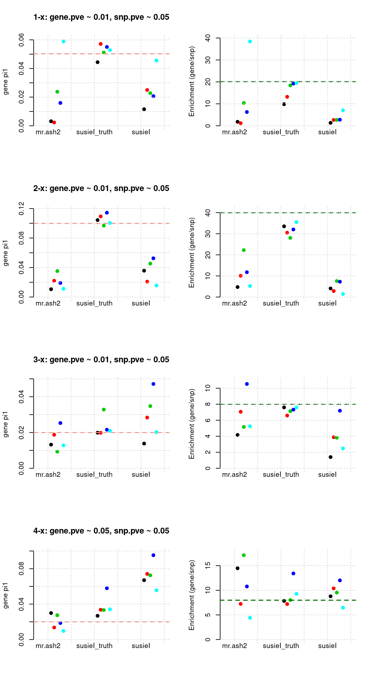
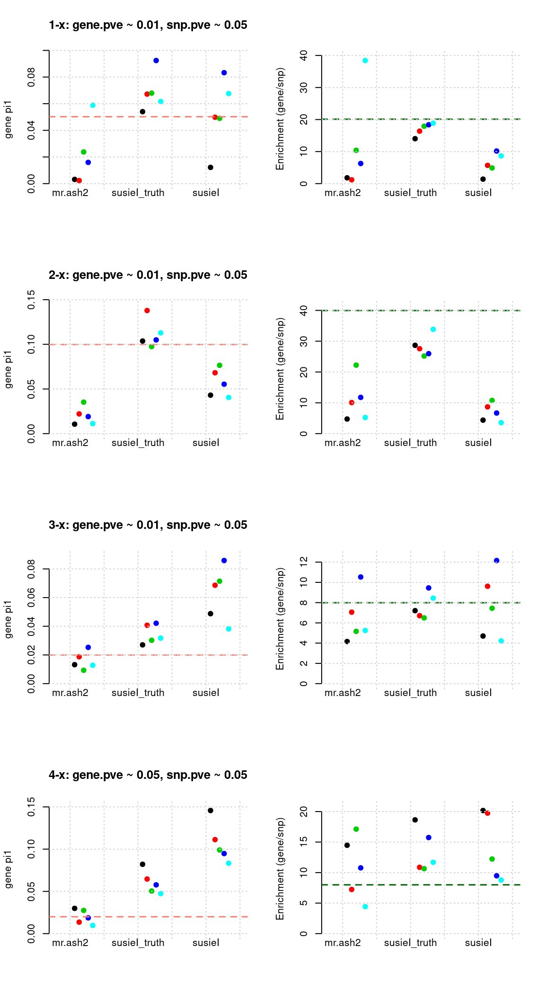
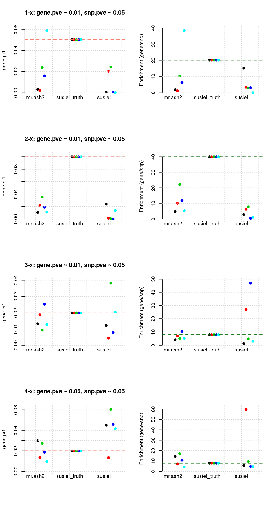

Test susieI using chr17 to 22
Last updated: 2020-09-18
Checks: 6 1
Knit directory: causal-TWAS/
This reproducible R Markdown analysis was created with workflowr (version 1.6.2). The Checks tab describes the reproducibility checks that were applied when the results were created. The Past versions tab lists the development history.
The R Markdown file has unstaged changes. To know which version of the R Markdown file created these results, you’ll want to first commit it to the Git repo. If you’re still working on the analysis, you can ignore this warning. When you’re finished, you can run wflow_publish to commit the R Markdown file and build the HTML.
Great job! The global environment was empty. Objects defined in the global environment can affect the analysis in your R Markdown file in unknown ways. For reproduciblity it’s best to always run the code in an empty environment.
The command set.seed(20191103) was run prior to running the code in the R Markdown file. Setting a seed ensures that any results that rely on randomness, e.g. subsampling or permutations, are reproducible.
Great job! Recording the operating system, R version, and package versions is critical for reproducibility.
Nice! There were no cached chunks for this analysis, so you can be confident that you successfully produced the results during this run.
Great job! Using relative paths to the files within your workflowr project makes it easier to run your code on other machines.
Great! You are using Git for version control. Tracking code development and connecting the code version to the results is critical for reproducibility.
The results in this page were generated with repository version 13cad06. See the Past versions tab to see a history of the changes made to the R Markdown and HTML files.
Note that you need to be careful to ensure that all relevant files for the analysis have been committed to Git prior to generating the results (you can use wflow_publish or wflow_git_commit). workflowr only checks the R Markdown file, but you know if there are other scripts or data files that it depends on. Below is the status of the Git repository when the results were generated:
Ignored files:
Ignored: .Rhistory
Ignored: .Rproj.user/
Ignored: code/workflow/.ipynb_checkpoints/
Ignored: data/
Untracked files:
Untracked: code/run_test_susieI_temp.R
Untracked: code/workflow/workflow-ashtest-20200915.ipynb
Untracked: code/workflow/workflow-susieI-20200915.ipynb
Unstaged changes:
Modified: analysis/simulation-susieI-ukbchr17to22-gtex.adipose.Rmd
Modified: code/run_UKB_process.R
Modified: code/run_simulate_data.R
Modified: code/run_test_susieI.R
Modified: code/simulate_phenotype.R
Modified: code/stats_func.R
Modified: code/workflow/workflow-data.ipynb
Modified: code/workflow/workflow-susieI-20200813.ipynb
Note that any generated files, e.g. HTML, png, CSS, etc., are not included in this status report because it is ok for generated content to have uncommitted changes.
These are the previous versions of the repository in which changes were made to the R Markdown (analysis/simulation-susieI-ukbchr17to22-gtex.adipose.Rmd) and HTML (docs/simulation-susieI-ukbchr17to22-gtex.adipose.html) files. If you’ve configured a remote Git repository (see ?wflow_git_remote), click on the hyperlinks in the table below to view the files as they were in that past version.
| File | Version | Author | Date | Message |
|---|---|---|---|---|
| Rmd | c1c6bcc | simingz | 2020-09-14 | susieI plots |
| html | c1c6bcc | simingz | 2020-09-14 | susieI plots |
| Rmd | 4d39fd6 | simingz | 2020-09-14 | susieI plots |
| html | 4d39fd6 | simingz | 2020-09-14 | susieI plots |
| Rmd | 79b77d5 | simingz | 2020-09-04 | susieI more runs |
| html | 79b77d5 | simingz | 2020-09-04 | susieI more runs |
| Rmd | bb0bce0 | simingz | 2020-09-03 | susie prior |
| html | bb0bce0 | simingz | 2020-09-03 | susie prior |
| Rmd | 193a8df | simingz | 2020-09-01 | increase gene pve |
| html | 193a8df | simingz | 2020-09-01 | increase gene pve |
| Rmd | 86681eb | simingz | 2020-08-28 | susieI all regions |
| html | 86681eb | simingz | 2020-08-28 | susieI all regions |
| Rmd | 41c8849 | simingz | 2020-08-20 | more parameter examples for susieI |
| html | 41c8849 | simingz | 2020-08-20 | more parameter examples for susieI |
| Rmd | 86ac96e | simingz | 2020-08-19 | more iterations |
| html | 86ac96e | simingz | 2020-08-19 | more iterations |
| Rmd | bd402eb | simingz | 2020-08-19 | susieI bug fix |
| html | bd402eb | simingz | 2020-08-19 | susieI bug fix |
| Rmd | f125882 | simingz | 2020-08-19 | susieI |
| html | f125882 | simingz | 2020-08-19 | susieI |
| Rmd | d299f60 | simingz | 2020-08-19 | susieI |
| html | d299f60 | simingz | 2020-08-19 | susieI |
| Rmd | 846fb96 | simingz | 2020-08-14 | susieI |
| html | 846fb96 | simingz | 2020-08-14 | susieI |
| Rmd | fd909a1 | simingz | 2020-08-14 | susieI |
library(mr.ash.alpha)
library(data.table)
suppressMessages({library(plotly)})
library(tidyr)
library(plyr)
library(stringr)
library(kableExtra)
source("analysis/summarize_twas_plots.R")Analysis description
n <- 20000 # number of samples
p <- 86000 # number of SNPs
J <- 1653 # number of genesThe genotype data we used is from UKB biobank, randomly selecting n = 20000 samples. We use SNP genotype data from chr 17 to chr 22 combined. These genomic regions represents 12.5% of the genome. SNPs are downsampled to 1/10 (randomly), eQTLs (see below for definition of eQTL) were added back. This ends up with p = p as.charater(p) SNPs.
Our analysis consists of the following steps:
- Build expression predictors using another expression-genotype dataset.
The one we used in this analysis is GTEx Adipose tissue v7 dataset. This dataset contains ~ 380 samples. FUSION/TWAS were used to train expression model and we used their lasso results. SNPs included in eQTL anlaysis are restricted to cis-locus 500kb on either side of the gene boundary. eQTLs are defined as SNPs with abs(effectize) > 1e-8 in lasso results.
- Impute expression.
We impute gene expression for our genotype data using expression models obtained from step 1. There are 1653 genes with expression model from chr17 to chr22. We imputed expression from genotypes using the expression predictors.
- Define and select regions
Next, the analysis is done at the “region” level, which is 500kb bins along the genome. Each bin would contain all the SNPs, as well as all the genes in that bin. We are exploring several ways to select regions that contain true signals, e.g. based on regional sum of mr.ash PIP for genes/SNPs, region smallest TWAS p value for gene/SNPs, or regional bayes factors, etc.
Run susie iteratively We then run susie for each of these regions. So the features of SuSiE are: SNPs and “genes” (not cis-eQTLs of that gene). We use the same prior for all SNPs and another prior for all “genes” when running SUSIE. In some settings, we also run SUSIE with null weight, which is calculated as
1- prior.SNP * n.SNP - prior.gene * n.gene. We obtain the PIP for SNPs and gene in the region. After we run susie for all regions (one iteration), we take the average of all SNP PIPs as the prior of SNPs for the next iteration and similarly for the prior for genes.We obtain PIP for genes from the last iteration as results.
simdatadir <- "~/causalTWAS/simulations/simulation_ashtest_20200721/"
outputdir <- "~/causalTWAS/simulations/simulation_susieI_20200813/"
susiedir <- "~/causalTWAS/simulations/simulation_susieI_20200813/"
mrashdir <- "~/causalTWAS/simulations/simulation_ashtest_20200721/"
tag <- '20200813-1-1'
Niter <- 30Regional minimum p value distribution
- minimum TWAS p value of genes for each region:
simtag <- "20200721-1-1"
rpipf <- paste0(simdatadir, simtag, ".pgenerprank.txt")
a <- read.table(rpipf, header = T)
a.c <- a[a$nCausal > 0, ]
ax <- pretty(0:max(-log10(a$rpmin)), n = 30)
par(mfrow=c(2,1))
h1 <- hist(-log10(a$rpmin), breaks = 100, xlab = "PIP", main = "min P value distribution-all", col = "grey"); grid()
h2 <- hist(-log10(a.c$rpmin), breaks = h1$breaks, xlab = "PIP", main = "min p distribution-causal", col = "salmon");grid()
| Version | Author | Date |
|---|---|---|
| 4d39fd6 | simingz | 2020-09-14 |
- minimum TWAS p value of genes and SNPs for each region:
rpipf <- paste0(simdatadir, simtag, ".p2rprank.txt")
a <- read.table(rpipf, header = T)
a.c <- a[a$nCausal > 0, ]
ax <- pretty(0:max(-log10(a$rpmin)), n = 30)
par(mfrow=c(2,1))
h1 <- hist(-log10(a$rpmin), breaks = 100, xlab = "PIP", main = "min P value distribution-all", col = "grey"); grid()
h2 <- hist(-log10(a.c$rpmin), breaks = h1$breaks, xlab = "PIP", main = "min p distribution-causal", col = "salmon");grid()
| Version | Author | Date |
|---|---|---|
| 4d39fd6 | simingz | 2020-09-14 |
Regional BF distribution
mean BF of both SNPs and genes in region as the regional BF.
rpipf <- paste0(simdatadir, simtag, ".rBF.txt")
a <- read.table(rpipf, header = T)
a.c <- a[a$nCausal > 0, ]
par(mfrow=c(2,1))
h1 <- hist(a$rBF, breaks = 5000, xlab = "PIP", main = "regional BF distribution-all", col = "grey", xlim = c(0,10)); grid()
h2 <- hist(a.c$rBF, breaks = h1$breaks, xlab = "PIP", main = "regional BF distribution-causal", col = "salmon",xlim = c(0,10));grid()
MR.ASH regional pip sum distribution
- Use mr.ash for gene only:
rpipf <- paste0(simdatadir, simtag, "-mr.ash.mrashrPIP.txt")
a <- read.table(rpipf, header = T)
a.c <- a[a$nCausal > 0, ]
ax <- pretty(0:max(a$rPIP), n = 30)
par(mfrow=c(2,1))
h1 <- hist(a$rPIP, breaks = 100, xlab = "PIP", main = "PIP distribution-all", col = "grey"); grid()
h2 <- hist(a.c$rPIP, breaks = h1$breaks, xlab = "PIP", main = "PIP distribution-causal", col = "salmon");grid()- MR.ash2s for both genes and SNPs using the same data
rpipf <- paste0(simdatadir, simtag, "-mr.ash2s.lassoes-es.mrash2srPIP.txt")
a <- read.table(rpipf, header = T)
a.c <- a[a$nCausal > 0 ,]
ax <- pretty(0:max(a$rPIP), n = 30) # Make a neat vector for the breakpoints
par(mfrow=c(2,1))
h1 <- hist(a$rPIP, breaks = 100, xlab = "PIP", main = "PIP distribution-all", col = "grey"); grid()
h2 <- hist(a.c$rPIP, breaks = h1$breaks, xlab = "PIP", main = "PIP distribution-causal", col = "salmon");grid()
Parameter estimation results
Results: Each row shows parameter estimation results from 5 simulation runs with similar settings (i.e. pi1 and PVE for genes and SNPs). each row has two plots, one for gene pi1 estimation, one for enrichment (gene pi1/snp pi1). Results from each run were represented by one dot, dots with the same color come from the same run. horizontal dash lines: simulation truth, mr.ash2, mr.ash for gene and SNPs; susietruth, the truth in selected regions that were used to run susie iteractively (susieI).
Regions: causal
Regions: We use regional PIP of both SNP and gene from mr.ash2s > 0.3, and also require at least one causal gene or SNP is present, also, at least one gene.
Susie run parameters:
L=1,null_weight = 0, didn’t updatenull_weightin iterations. We initialize with prior for genes and SNPs as uniform.
show_param <- function(mrashfs, susieIfs, susieIfs2){
param <- do.call(rbind, lapply(mr.ashfs, function(x) t(read.table(x))[2:1,]))
pars <- cbind(param[seq(1,nrow(param), 2), 2], param[seq(1,nrow(param), 2), 4], param[seq(1,nrow(param), 2), 1], param[seq(2,nrow(param), 2), 1], param[seq(1,nrow(param), 2), 3], param[seq(2,nrow(param), 2), 3])
colnames(pars) <- c("PVE.gene_truth", "PVE.SNP_truth", paste(rep(c("pi1.gene_", "pi1.SNP_"), each = 2), c("truth", "mr.ash2"), sep = ""))
param.s <- do.call(rbind, lapply(susieIfs, function(x) {load(x); c(tail(prior.gene_rec, 1), tail(prior.SNP_rec,1))}))
param.s.truth <- do.call(rbind, lapply(susieIfs2, function(x) {
a <- read.table(x, header = T);
c(nrow(a[a$ifcausal == 1 & a$type == "gene", , drop = F])/ nrow(a[a$type == "gene", , drop = F]),
nrow(a[a$ifcausal == 1 & a$type == "SNP", , drop = F])/ nrow(a[a$type == "SNP", , drop = F]))
}))
pars.s <- cbind(param.s.truth, param.s)[, c(1,3,2,4)]
colnames(pars.s) <- paste(rep(c("pi1.gene_", "pi1.SNP_"), each = 2), c("susietruth", "susieI"), sep = "")
df <- cbind(tags, format(pars, digits = 4), format(pars.s, digits =4))
rownames(df) <- NULL
return(df)
# df %>%
# kable("html", escape = F) %>%
# kable_styling("striped", full_width = F) %>%
# row_spec(c(1:5, 11:15), background = "#FEF3B9") %>%
# scroll_box(width = "100%", height = "600px", fixed_thead = T)
}
plot_param <- function(df, ...){
df <- apply(df[ , 2:ncol(df)], 2, function(x) as.numeric(x))
m <- cbind(df[,"pi1.gene_mr.ash2"], 1:nrow(df), 1 + 1:nrow(df)/nrow(df)/3)
st <- cbind(df[,"pi1.gene_susietruth"], 1:nrow(df), 2 + 1:nrow(df)/nrow(df)/3)
s <- cbind(df[,"pi1.gene_susieI"], 1:nrow(df), 3 + 1:nrow(df)/nrow(df)/3)
t <- df[1,"pi1.gene_truth"]
dfp <- rbind(m,st,s)
plot(dfp[,3], dfp[,1], col = dfp[,2], pch = 19, ylab = "gene pi1", xaxt = "n", xlab="", xlim = c(0.8, 3.5), frame.plot=FALSE, ylim = c(0, max(dfp[,1],t) *1.05), ...)
axis(side=1, at=1:3, labels = FALSE, tick = F)
text(x=1:3, 0, labels = c("mr.ash2", "susieI_truth", "susieI"), xpd = T, pos =1)
abline(h=t, lty = 2, col= "salmon", lwd=1.5)
grid()
m <- cbind(df[,"pi1.gene_mr.ash2"]/df[,"pi1.SNP_mr.ash2"], 1:nrow(df), 1 + 1:nrow(df)/nrow(df)/3)
st <- cbind(df[,"pi1.gene_susietruth"]/df[,"pi1.SNP_susietruth"], 1:nrow(df), 2 + 1:nrow(df)/nrow(df)/3)
s <- cbind(df[,"pi1.gene_susieI"]/df[,"pi1.SNP_susieI"], 1:nrow(df), 3 + 1:nrow(df)/nrow(df)/3)
t <- df[1,"pi1.gene_truth"]/df[1,"pi1.SNP_truth"]
dfp <- rbind(m,st,s)
plot(dfp[,3], dfp[,1], col = dfp[,2], pch = 19, ylab = "Enrichment (gene/snp)", xaxt = "n", xlab="", xlim = c(0.8, 3.5),frame.plot=FALSE, ylim = c(0, min(max(dfp[,1],t) *1.05, 150)))
axis(side=1, at=1:3, labels = FALSE, tick = F)
text(x=1:3, 0, labels = c("mr.ash2", "susieI_truth", "susieI"), xpd = T, pos =1)
abline(h= t, lty = 2, col= "darkgreen", lwd=1.5)
grid()
}tags <- paste(rep(1:3, each = 5), 1:5, sep = "-")
mr.ashfs <- paste0(mrashdir, "20200721-", tags, "-mr.ash2s.lassoes-es.param.txt")
susieIfs <- paste0(outputdir, "20200813-", tags, ".susieIres.Rd")
susieIfs2 <- paste0(outputdir, "20200813-", tags, ".1.txt")
df <- show_param(mrashfs, susieIfs, susieIfs2)
par(mfrow = c(3,2))
plot_param(df[1:5,], main = "1-x: gene.pve ~ 0.01, snp.pve ~ 0.05")
plot_param(df[6:10,], main = "2-x: gene.pve ~ 0.01, snp.pve ~ 0.05")
plot_param(df[11:15,], main = "3-x: gene.pve ~ 0.01, snp.pve ~ 0.05")
Regions: mrash gene+SNP (1)
Regions: We use regional PIP of both SNP and gene from mr.ash2s > 0.3.
Susie run parameters:
L=2, initializenull_weight = 0, updatenull_weightin iterations. We initialize with prior for genes and SNPs as uniform. (We also tried initialize with prior for genes and SNPs as 0.05 and 2.5e-3, results are the same.)
tags <- paste(rep(1:4, each = 5), 1:5, sep = "-")
mr.ashfs <- paste0(mrashdir, "20200721-", tags, "-mr.ash2s.lassoes-es.param.txt")
susieIfs <- paste0(outputdir, "20200813-", tags, ".config6.susieIres.Rd")
susieIfs2 <- paste0(outputdir, "20200813-", tags, ".config6.susieI.txt")
df <- show_param(mrashfs, susieIfs, susieIfs2)
par(mfrow = c(4,2))
plot_param(df[1:5,], main = "1-x: gene.pve ~ 0.01, snp.pve ~ 0.05")
plot_param(df[6:10,], main = "2-x: gene.pve ~ 0.01, snp.pve ~ 0.05")
plot_param(df[11:15,], main = "3-x: gene.pve ~ 0.01, snp.pve ~ 0.05")
plot_param(df[16:20,], main = "4-x: gene.pve ~ 0.05, snp.pve ~ 0.05")
Regions: mrash gene+SNP (2)
Regions: We use regional PIP of both SNP and gene from mr.ash2s > 0.3.
Susie run parameters:
L=2,null_weight = 0. Didn’t updatenull_weightin iterations. We initialize with prior for genes and SNPs as uniform.
tags <- paste(rep(1:4, each = 5), 1:5, sep = "-")
susieIfs <- paste0(outputdir, "20200813-", tags, ".config7.susieIres.Rd")
susieIfs2 <- paste0(outputdir, "20200813-", tags, ".config7.susieI.txt")
df <- show_param(mrashfs, susieIfs, susieIfs2)
par(mfrow = c(4,2))
plot_param(df[1:5,], main = "1-x: gene.pve ~ 0.01, snp.pve ~ 0.05")
plot_param(df[6:10,], main = "2-x: gene.pve ~ 0.01, snp.pve ~ 0.05")
plot_param(df[11:15,], main = "3-x: gene.pve ~ 0.01, snp.pve ~ 0.05")
plot_param(df[16:20,], main = "4-x: gene.pve ~ 0.05, snp.pve ~ 0.05")
Regions: mrash gene only
Regions: We use regional sum of PIP for genes from mr.ash for genes only > 0.1.
Susie run parameters:
L=2. Updatenull_weightin iterations. We initialize with prior for genes and SNPs as uniform,null_weight = 0.
tags <- paste(rep(1:4, each = 5), 1:5, sep = "-")
susieIfs <- paste0(outputdir, "20200813-", tags, ".config9.susieIres.Rd")
susieIfs2 <- paste0(outputdir, "20200813-", tags, ".config9.susieI.txt")
df <- show_param(mrashfs, susieIfs, susieIfs2)
par(mfrow = c(4,2))
plot_param(df[1:5,], main = "1-x: gene.pve ~ 0.01, snp.pve ~ 0.05")
plot_param(df[6:10,], main = "2-x: gene.pve ~ 0.01, snp.pve ~ 0.05")
plot_param(df[11:15,], main = "3-x: gene.pve ~ 0.01, snp.pve ~ 0.05")
plot_param(df[16:20,], main = "4-x: gene.pve ~ 0.05, snp.pve ~ 0.05")
Regions: TWAS gene only
Regions: We use regional min p value for genes from twas for genes only, requiring this p value in top 5%.
Susie run parameters:
L=2. Updatenull_weightin iterations. We initialize with prior for genes and SNPs as uniform,null_weight = 0.
tags <- paste(rep(1:4, each = 5), 1:5, sep = "-")
susieIfs <- paste0(outputdir, "20200813-", tags, ".config10.susieIres.Rd")
susieIfs2 <- paste0(outputdir, "20200813-", tags, ".config10.susieI.txt")
df <- show_param(mrashfs, susieIfs, susieIfs2)
par(mfrow = c(4,2))
plot_param(df[1:5,], main = "1-x: gene.pve ~ 0.01, snp.pve ~ 0.05")
plot_param(df[6:10,], main = "2-x: gene.pve ~ 0.01, snp.pve ~ 0.05")
plot_param(df[11:15,], main = "3-x: gene.pve ~ 0.01, snp.pve ~ 0.05")
plot_param(df[16:20,], main = "4-x: gene.pve ~ 0.05, snp.pve ~ 0.05")
Regions: TWAS gene+SNP
Regions: We use regional min p value for genes or SNPs from twas for genes and snps, requiring this p value in top 5% for genes or 1% for SNPs.
Susie run parameters:
L=2. Updatenull_weightin iterations. We initialize with prior for genes and SNPs as uniform,null_weight = 0.
tags <- paste(rep(1:4, each = 5), 1:5, sep = "-")
susieIfs <- paste0(outputdir, "20200813-", tags, ".config11.susieIres.Rd")
susieIfs2 <- paste0(outputdir, "20200813-", tags, ".config11.susieI.txt")
df <- show_param(mrashfs, susieIfs, susieIfs2)
par(mfrow = c(4,2))
plot_param(df[1:5,], main = "1-x: gene.pve ~ 0.01, snp.pve ~ 0.05")
plot_param(df[6:10,], main = "2-x: gene.pve ~ 0.01, snp.pve ~ 0.05")
plot_param(df[11:15,], main = "3-x: gene.pve ~ 0.01, snp.pve ~ 0.05")
plot_param(df[16:20,], main = "4-x: gene.pve ~ 0.05, snp.pve ~ 0.05")
Regions: all (1)
Regions: All regions.
Susie run parameters:
L=2. initialize withnull_weight = 0and updatenull_weightbased on last iteration results. We initialize with prior for genes and SNPs as uniform.
mr.ashfs <- paste0(mrashdir, "20200721-", tags, "-mr.ash2s.lassoes-es.param.txt")
susieIfs <- paste0(outputdir, "20200813-", tags, ".config2.susieIres.Rd")
susieIfs2 <- paste0(outputdir, "20200813-", tags, ".config2.susieI.txt")
df <- show_param(mrashfs, susieIfs, susieIfs2)
par(mfrow = c(4,2))
plot_param(df[1:5,], main = "1-x: gene.pve ~ 0.01, snp.pve ~ 0.05")
plot_param(df[6:10,], main = "2-x: gene.pve ~ 0.01, snp.pve ~ 0.05")
plot_param(df[11:15,], main = "3-x: gene.pve ~ 0.01, snp.pve ~ 0.05")
plot_param(df[16:20,], main = "4-x: gene.pve ~ 0.05, snp.pve ~ 0.05")
Regions: all (2)
Regions: All regions.
Susie run parameters:
L=1. Did not updatenull_weightin each iteration. We initialize with prior for genes and SNPs as uniform.
mr.ashfs <- paste0(mrashdir, "20200721-", tags, "-mr.ash2s.lassoes-es.param.txt")
susieIfs <- paste0(outputdir, "20200813-", tags, ".config3.susieIres.Rd")
susieIfs2 <- paste0(outputdir, "20200813-", tags, ".config3.susieI.txt")
df <- show_param(mrashfs, susieIfs, susieIfs2)
par(mfrow = c(4,2))
plot_param(df[1:5,], main = "1-x: gene.pve ~ 0.01, snp.pve ~ 0.05")
plot_param(df[6:10,], main = "2-x: gene.pve ~ 0.01, snp.pve ~ 0.05")
plot_param(df[11:15,], main = "3-x: gene.pve ~ 0.01, snp.pve ~ 0.05")
plot_param(df[16:20,], main = "4-x: gene.pve ~ 0.05, snp.pve ~ 0.05")
Regions: all (others)
- Susie run parameters:
L=1. initialize with null_weight = 0 and update null_weight based on last iteration results. We initialize with prior for genes and SNPs as uniform. The prior for genes is underestimated for low power settings (1-x, 2-x), many converged to close to 0, for high power settings it is better. - Susie run parameters:
L=5. initialize with null_weight = 0 and update null_weight based on last iteration results. The prior for gene estimation is fine for all runs, however prior for SNPs overestimated about 10 times. - We have tried different initiation strategies, but the results remain the same.
Regions: TWAS BF
- Regions: regional TWAS BF > 2
tags <- paste(rep(1:4, each = 5), 1:5, sep = "-")
mr.ashfs <- paste0(mrashdir, "20200721-", tags, "-mr.ash2s.lassoes-es.param.txt")
susieIfs <- paste0(outputdir, "20200813-", tags, ".config12.susieIres.Rd")
susieIfs2 <- paste0(outputdir, "20200813-", tags, ".config12.susieI.txt")
df <- show_param(mrashfs, susieIfs, susieIfs2)
par(mfrow = c(4,2))
plot_param(df[1:5,], main = "1-x: gene.pve ~ 0.01, snp.pve ~ 0.05")
plot_param(df[6:10,], main = "2-x: gene.pve ~ 0.01, snp.pve ~ 0.05")
plot_param(df[11:15,], main = "3-x: gene.pve ~ 0.01, snp.pve ~ 0.05")
plot_param(df[16:20,], main = "4-x: gene.pve ~ 0.05, snp.pve ~ 0.05")
sessionInfo()R version 3.5.1 (2018-07-02)
Platform: x86_64-pc-linux-gnu (64-bit)
Running under: Scientific Linux 7.4 (Nitrogen)
Matrix products: default
BLAS/LAPACK: /software/openblas-0.2.19-el7-x86_64/lib/libopenblas_haswellp-r0.2.19.so
locale:
[1] LC_CTYPE=en_US.UTF-8 LC_NUMERIC=C
[3] LC_TIME=en_US.UTF-8 LC_COLLATE=en_US.UTF-8
[5] LC_MONETARY=en_US.UTF-8 LC_MESSAGES=en_US.UTF-8
[7] LC_PAPER=en_US.UTF-8 LC_NAME=C
[9] LC_ADDRESS=C LC_TELEPHONE=C
[11] LC_MEASUREMENT=en_US.UTF-8 LC_IDENTIFICATION=C
attached base packages:
[1] stats graphics grDevices utils datasets methods base
other attached packages:
[1] kableExtra_1.2.1 stringr_1.4.0 plyr_1.8.6
[4] tidyr_0.8.3 plotly_4.9.2.9000 ggplot2_3.3.1
[7] data.table_1.12.7 mr.ash.alpha_0.1-34
loaded via a namespace (and not attached):
[1] tidyselect_1.1.0 purrr_0.3.4 lattice_0.20-38
[4] colorspace_1.3-2 vctrs_0.3.1 generics_0.0.2
[7] htmltools_0.3.6 viridisLite_0.3.0 yaml_2.2.0
[10] rlang_0.4.6 later_0.7.5 pillar_1.4.4
[13] glue_1.4.1 withr_2.1.2 lifecycle_0.2.0
[16] munsell_0.5.0 gtable_0.2.0 workflowr_1.6.2
[19] rvest_0.3.2 htmlwidgets_1.3 evaluate_0.12
[22] knitr_1.20 httpuv_1.4.5 Rcpp_1.0.4.6
[25] promises_1.0.1 scales_1.0.0 backports_1.1.2
[28] webshot_0.5.1 jsonlite_1.6.1 fs_1.3.1
[31] digest_0.6.25 stringi_1.3.1 dplyr_1.0.0
[34] grid_3.5.1 rprojroot_1.3-2 here_0.1
[37] tools_3.5.1 magrittr_1.5 lazyeval_0.2.1
[40] tibble_3.0.1 crayon_1.3.4 whisker_0.3-2
[43] pkgconfig_2.0.2 ellipsis_0.3.1 Matrix_1.2-15
[46] xml2_1.2.0 rmarkdown_1.10 httr_1.4.1
[49] rstudioapi_0.11 R6_2.3.0 git2r_0.26.1
[52] compiler_3.5.1